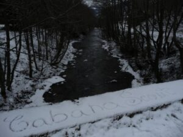

Cum a SCOUTocit Cabana…

În perioada 2-5 februarie, grupul nostru a fost la “SCOUTocitul iernii” – prima ieșire de sezon rece organizată de Cabana Scout. La întoarcerea din această activitate, prinși cu orice altceva decât cu a ne scrie impresiile despre o experiență de neuitat, am lăsat mărturiile pentru mai târziu. Mezina grupului însă a reușit să își facă timp pentru a scrie câteva cuvinte. Vă prezentăm așadar Hike-ul nostru de iarnă, văzut prin ochii ei:
Școala de iarnă, un eveniment petrecut la munte, în mijlocul Pietrei Craiului, între 2 și 5 februarie, a fost o experiență minunată pentru cercetașii Cabanei, ce a trezit adrenalina în sângele nostru, cu toate că nu ne-a fost prea cald și nu am avut nici un bucătar profesionist să ne facă mâncare.
Pentru noi, această experiență nu va fi niciodată regretată. Cabana “Garofița Pietrei Craiului” a fost superbă, iar cabanierul, un om bun și deschis care a avut bună voința de a ne relata viața lui pe scurt și ce la determinat să devină un om al naturii, ne-a făcut să ne simțim ca acasă. Ne-am distrat foarte tare, indiferent că nu ne-au lipsit totuși momentele tensionate tipice orașului (foarte rare, dar totuși existente). Din fericire, nu am văzut prea mult asfalt și apusurile erau albastre, ceea ce a fost perfect, ținând cont că în București avem niște apusuri tare jucăușe din pricina poluării.
Peisajul mirific ne-a determinat să vrem să explorăm mai mult, la fel și urmele micuțelor viețuitoare (râși, lupi, urși). Adi și GMK au fost foarte deschiși în a ne învăța lucruri noi. Activități ca “Atelierul de Noduri” , “Istoria Cercetășiei” și cățărarea au făcut “vacanța” mult mai frumoasă. Ce mai, a fost extraordinar, mai ales ca am fost înconjurați de prieteni care sunt gata oricând pentru a sări în ajutorul unui seamăn!
CERCETAȘI! GATA ORICÂND!
Cristiana GROSU,
temerar la Cabana Scout